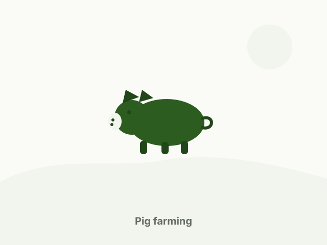

Livestock
Livestock farming
Five animal categories, each with its own housing, feeding and health routine. Select a category to see details and current availability.
Catalogue items, availability and images on this page are sample placeholders and do not represent current stock.

Livestock categories
All items
No matches found
Try a different search term or clear the filters.
Raising livestock
Routine matters more than luck
Housing density, feed type, clean water and everyday observation decide how an animal farm performs. We plan these before animals arrive, then adjust as they grow.
Feed is usually the largest running cost, so rations are matched to the growth stage rather than bought by habit. Ask us for a feeding plan for your setup.
General guidance only — for animal health problems always consult a licensed veterinarian.
Get in touch
Planning to start or expand a livestock unit?
Send your requirement — animal type, feed or crop, quantity and location — and we will get back to you.